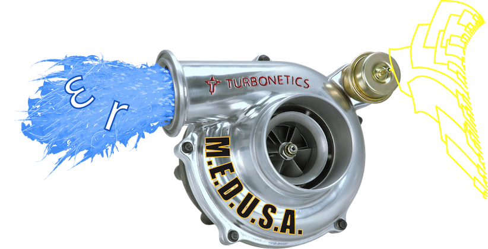

Medusa
Using stepwise AIC to compare models of lineage diversification, MEDUSA quantifies support for multiple shifts in birth and death rates and is well suited for use with incompletely resolved phylogenies. MEDUSA is provided as open-source software in the R language and is contained within the GEIGER package.
|  | ||
| Now available: Turbo-MEDUSA! This revamped implementation of the MEDUSA method features 1) speedier code, 2) an AIC threshold correction for larger trees, and 3) (for unix-like systems) multicore support (but only for non-GUI instantiations). The latter in particular can handle trees of several thousand tips in a reasonable amount of time. |
||